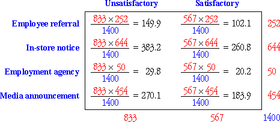

Independence
In this section, we will examine whether two categorical variables are independent or are in some way related to each other.
Independence is extremely important so you should ensure that you understand the earlier section about independence before reading further.
Assessing independence, based on a sample
Independence depends on the probabilities in the population, which in practice we donÃt usually know exactly.
We must assess independence from a sample of individuals — a contingency table.
Recruiting source and success
A sample of 1,400 store clerks hired during 1979 by a large US retailing chain was selected by researchers who wanted to determine whether the recruiting source for employees is related to whether they perform satisfactorily in their job (determined from supervisor evaluations). Four recruiting sources were defined.
| Unsatisfactory | Satisfactory | Total | |
|---|---|---|---|
| Employee referral | 167 | 85 | 252 |
| In-store notice | 383 | 261 | 644 |
| Employment agency | 33 | 17 | 50 |
| Media announcement | 250 | 204 | 454 |
| Total | 833 | 567 | 1400 |
Independence would be an important characteristic of employment since it would imply that employees recruited from all sources have the same probability of satisfactory performance.
Are those sample data consistent with a model of independence?
Marginal distributions and independence
The marginal counts in a contingency table describe the univariate distributions of the two variables on their own, but do not tell you anything about their relationship. For example, the two contingency tables below have the same margins.
|
|
However the table on the left supports an extremely strong relationship — if the row category is known, we can accurately predict the column category. On the other hand, there is no evidence of association in the table on the right — each row of the table contains the column categories in the same proportions.
Expected cell counts implied by independence
In practice, the pattern of counts in a contingency table is rarely so easy to interpret. A first step is to determine the pattern that is most consistent with independence of the rows and columns, based on the observed margins in the contingency table.
| C1 | C2 | C3 | Total | |
|---|---|---|---|---|
| R1 | ? | ? | ? | 30 |
| R2 | ? | ? | ? | 40 |
| R3 | ? | ? | ? | 30 |
| Total | 30 | 40 | 30 | 100 |
If the rows and columns are independent, the conditional probabilities are the same for each row, so we distribute each marginal row total between the column categories in the same proportions — determined by the marginal proportions for the column categories.
This pattern gives the expected cell counts and the following formula can be used to evaluate them.

where n denotes the total for the whole table and nx and ny denote the marginal totals for row x and column y.
Recruiting source and success
We now find the pattern of expected cell counts for the recruitment data that is most consistent with independence of recruiting source and success, based only on the margins of the observed contingency table.
| Unsatisfactory | Satisfactory | Total | |
|---|---|---|---|
| Employee referral | ? | ? | 252 |
| In-store notice | ? | ? | 644 |
| Employment agency | ? | ? | 50 |
| Media announcement | ? | ? | 454 |
| Total | 833 | 567 | 1400 |
If success is indeed independent of recruitment, then we estimate that the proportion of the 252 recruited from 'Employee referral' who are successful would be the same as the marginal proportion who are successful. Since 833 out of the total 1400 in the study are successful, we therefore expect that the number recruited from 'Employee referral' who are successful would be
This is an example of the general formula that was presented earlier,


If recruitment and success are indeed independent, then the observed cell counts in the sample data should be similar to these expected cell counts.
| Unsatisfactory | Satisfactory | Total | |
|---|---|---|---|
| Employee referral | 167 (149.9) |
85 (102.1) |
252 |
| In-store notice | 383 (383.2) |
261 (260.8) |
644 |
| Employment agency | 33 (29.8) |
17 (20.2) |
50 |
| Media announcement | 250 (270.1) |
204 (183.9) |
454 |
| Total | 833 | 567 | 1400 |
We return to this example, giving an evaluation of the evidence for a relationship between recruiting source and success, later in this section.
Comparison of observed and estimated cell counts
The hypothesis of independence is assessed by asking whether the observed and expected cell counts are 'sufficiently close' — are the observed counts consistent with the counts expected under independence? We address this formally in the following pages.